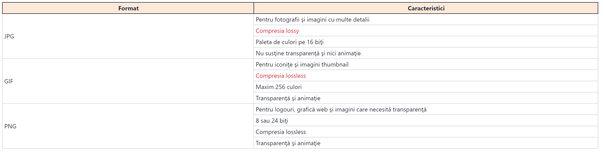
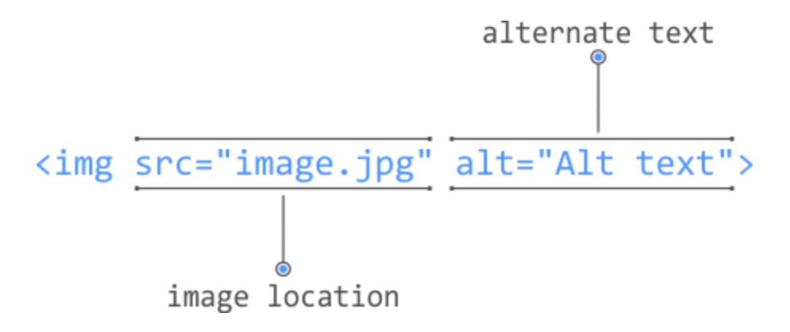
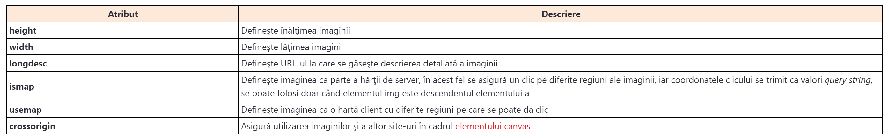
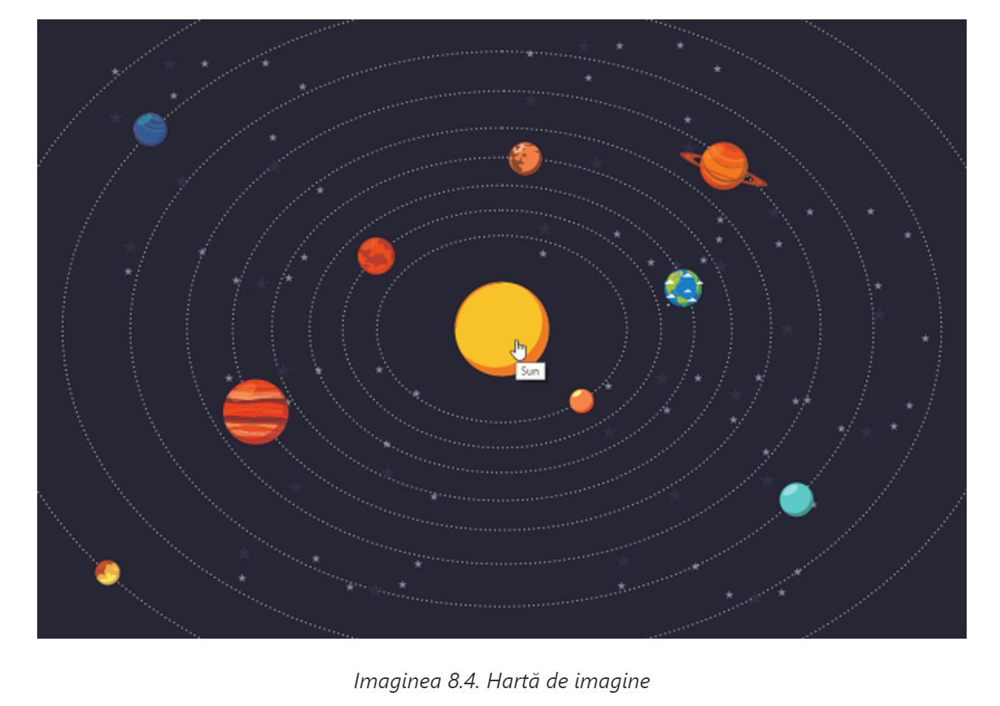

Documentele HTML moderne nu se pot imagina fără părţi multimedia. Noţiunea de multimedia presupune tot ceea ce se poate vedea şi auzi pe pagină, dar nu este un simplu text. Prin urmare, această noţiune presupune imagini, înregistrări audio şi video. Vom dedica un întreg modul acestor noţiuni. Prima lecţie va aborda noţiunea de imagini în cadrul documentelor HTML, iar a doua lecţie va aborda noţiunile de înregistrare audio şi video.
Imaginile sunt o parte indispensabilă a documentelor HTML din ziua de azi. Noţiunea de imagini presupune fotografii, grafice, diagrame, iconiţe şi, în general, toate fişierele care se prezintă printr-unul din formatele de imagini. Înainte de prezentarea tehnicilor pentru introducerea imaginilor în cadrul documentelor HTML, trebuie să ne ocupăm de unele noţiuni generale în legătură cu imaginile în format digital.
Formatele de imagini
În cadrul documentelor HTML, se folosesc, în general, imagini într-unul din următoarele formate:
- JPG
- GIF
- PNG
Formatul JPG (Joint Photographic Experts Group) presupune fişiere care sunt prezentate cu extensia .jpg sau .jpeg. Acest format nu susţine transparenţa (engl. transparency) şi nici animaţia, dar este excelent pentru comprimarea fotografiilor. Astfel, fotografiile se pot optimiza foarte eficient prin reducerea dimensiunii fişierului. Totuşi, este important să înţelegem că dimensiunea fişierului este invers proporţională cu calitatea acestuia, aşadar, în timpul comprimării, trebuie ales raportul adecvat dintre ocuparea memoriei şi calitate.
GIF (Graphic Interchange Format) este formatul pentru afişarea imaginilor, dar care este limitat la 256 de culori. Astfel de imagini sunt excelente pentru prezentarea desenelor tehnice, a imaginilor thumbnail şi a iconiţelor. Formatul GIF asigură crearea imaginilor cu un număr redus de culori (2, 4, 6 etc.), aşadar se poate economisi suficient la dimensiune atunci când se creează fişiere. Formatul GIF susţine transparenţa (cu destule restricţii) şi animaţia, ceea ce înseamnă că se poate crea o imagine cu efectul mişcării. Cândva, acest format se folosea adesea pe web pentru crearea imaginilor, în timp ce în ziua de azi, acest lucru este tot mai puţin necesar datorită abordărilor mai moderne în crearea animaţiei. Astfel, putem spune că GIF se foloseşte tot mai puţin în contextul animaţiei.
PNG (Portable Network Graphic) este un format mai recent, susţinut de toate cititoarele HTML actuale, care combină funcţionalităţile GIF şi JPEG. Acest format raster al imaginilor foloseşte comprimarea fără pierderi de calitate. Există două tipuri ale acestui format:
- PNG-8, conţine informaţia despre culori pe 8 biţi (similar cu GIF);
- PNG-24, conţine informaţia despre culori pe 24 biţi (combină cele mai bune caracteristici din formatele GIF şi JPG).
PNG-8 nu susţine animaţia, dar susţine transparenţă, mult mai bine decât GIF, în timp ce PNG-24 susţine o transparenţă şi mai bună, iar calitatea imaginii este mai bună decât cea oferită de formatul JPG.
Totuşi, fişierele PNG ocupă mult mai multă memorie decât fişierele JPG, aşadar se folosesc doar atunci când trebuie păstrată transparenţa. În cele din urmă, putem rezuma caracteristicile celor trei formate de imagini. Principalele caracteristici ale formatelor menţionate sunt prezentate în tabelul de mai jos
Dimensiunile imaginilor şi rezoluţia
Imaginile digitale, la fel ca oricare alt conținut, se afişează pe ecranele calculatoarelor şi a altor dispozitive digitale folosind puncte mici, numite pixeli. Imaginile propriu-zise sunt formate dintr-o mulţime de pixeli. Numărul pixelilor pe inch se numeşte rezoluţie a imaginii sau Pixels Per Inch - PPI. Rezoluţia standard a ecranelor de azi este de la 70 până la 130 PPI, în timp ce acest număr, la unele dispozitive mobile, depăşeşte şi 500 PPI.
Pe lângă rezoluţie, în timpul lucrului cu imaginile trebuie să avem grijă şi de dimensiunile lor. Dimensiunea unei imagini se exprimă prin lăţime (engl. width) şi înălţime (engl. height). La imaginile digitale, dimensiunile se exprimă, în general, în pixeli, aşadar putem spune că dimensiunea unei imagini este de 600x400 pixeli. Spaţiul pe care îl va ocupa o imagine pe ecran depinde exclusiv de rezoluţia ecranului (PPI). La ecranele cu o rezoluţie mai mare, aceeaşi imagine va arăta mai mare, şi invers.
Adăugarea imaginilor în documentul HTML
Documentele HTML nu au posibilitatea să conţină imagini în mod direct, ele pot conţine doar linkuri către imagini. Cu alte cuvinte, în document se introduce referinţa la imaginea care trebuie introdusă în document, într-o anumită poziţie. Toate imaginile care se afişează în cadrul unei pagini HTML, trebuie să se găsească la una dintre următoarele două locaţii:
- în cadrul structurii de fişiere de pe site-ul sau aplicaţia care se dezvoltă;
- pe un file server extern.
Pentru adăugarea imaginii în documentul HTML, folosim elementul img. Acest element se construieşte prin folosirea tagului cu autoînchidere, deoarece nu poate accepta conţinut, ci doar atribute. Elementul img defineşte două atribute obligatorii, şi anume:
- src – reprezintă locaţia la care se află imaginea; locaţia se defineşte prin folosirea adresei URL;
- alt – defineşte textul care se va afişa vizitatorului site-ului, dacă din orice motiv imaginea nu se poate afişa; acest text este folosit şi de cititoarele mecanice ale paginilor HTML, pentru o înţelegere mai bună a conţinutului imaginii.
Când se ia în considerare tot ceea ce am specificat până acum despre elementul img, codul pentru introducerea unei imagini în documentul HTML poate fi următorul:
<img src="image.jpg" alt="Alt text">
Codul prezentat se poate separa şi în mai multe părţi, ca în imaginea de mai jos
Atributul src ne comunică unde se află imaginea. Valoarea acestui atribut este adresa URL până la imagine. În exemplu este specificată adresa URL relativă, care se referă la locaţia documentului curent. De aceea, pentru ca în exemplul prezentat să fie într-adevăr afişată imaginea şi în cadrul paginii HTML, ea trebuie să se numească image.jpg şi trebuie să se găsească în acelaşi folder în care se găseşte şi documentul cu acest cod.
Pe lângă cele două atribute menţionate, obligatorii, care trebuie definite pe fiecare element img, acest element vă permite definirea altor atribute opţionale. Aceste atribute sunt afişate în tabelul
Definirea înălţimii şi lăţimii imaginii
Când o imagine se introduce în cadrul documentului HTML, se presupune că aceasta are dimensiunile ei originale. De exemplu, dacă imaginea are dimensiunea de 600x400 pixeli, ea va avea tocmai această dimensiune şi în cadrul documentului HTML. Totuşi, uneori poate apărea nevoia de introducere explicită a dimensiunii imaginii. Acest lucru se poate efectua în două moduri: folosind limbajul HTML sau folosind limbajul CSS. Ambele abordări sunt valide, dar se recomandă utilizarea CSS-ului. Totuşi, noi ne vom familiariza cu CSS în a doua parte a acestui curs, aşadar în continuare va fi ilustrată abordarea HTML pentru definirea înălţimii şi lăţimii imaginii.
Limbajul HTML5 permite definirea înălţimii şi lăţimii imaginii prin folosirea atributului height şi width:
<img src="image.jpg" alt="demo image" width="800px">
În exemplu este utilizat atributul width, prin care se defineşte lăţimea imaginii. Valoarea sa este exprimată în pixeli. Într-un mod identic se poate defini şi înălţimea imaginii.
Câteva sfaturi pentru definirea dimensiunii imaginilor
Întotdeauna este mai bine ca dimensiunea reală a imaginii şi dimensiunea pe care o va ocupa imaginea în cadrul documentului HTML să se deosebească un pic. Cu alte cuvinte, nu este bine să folosim o imagine de 4000x3000 pixeli, iar apoi aceasta să fie prezentată în documentul HTML în dimensiunea de 400x300 pixeli. În acest fel, fără nicio nevoie, mărim dimensiunea întregului site sau a aplicaţiei, ceea ce, în cele din urmă, influenţează viteza de încărcare şi utilizarea. Dimensiunea originală a imaginii poate fi şi puţin mai mare decât cea folosită pe site, dar în niciun caz nu poate fi mai mică.
Definirea dimensiunii imaginii se poate efectua cel mai bine prin folosirea CSS-ului. Prin urmare, tehnicile prezentate în această lecţie sunt doar demonstrative. Totuşi, şi ele ne pot ajuta să învăţăm principiile de bază ale dimensionării imaginilor în cadrul documentelor HTML.
Deşi este posibilă definirea manuală a lăţimii şi înălţimii imaginii, acest lucru nu este necesar aproape niciodată. Pur şi simplu, prin definirea manuală a uneia dintre dimensiuni (înălţimea sau lăţimea), a doua dimensiune se va adapta în mod automat, aşadar imaginea îşi va menţine proporţiile originale. O astfel de situaţie se poate întâlni şi în exemplul tocmai prezentat. Am definit doar lăţimea imaginii, în timp ce înălţimea se va adapta în mod automat. Pe de altă parte, când se defineşte şi înălţimea, şi lăţimea imaginii, proporţiile ei originale nu se vor menţine în mod automat, aşadar, în majoritatea cazurilor, vom obţine o afişare inadecvată a imaginii (desigur, dacă prin dimensiunile introduse manual nu setăm raportul original al paginilor).
Elementul figure
Deseori, în timpul creării unui document HTML, poate apărea nevoia de prezentare a imaginii ca o unitate separată, individuală. De exemplu, tocmai aşa sunt şi imaginile 8.1. şi 8.2. prezentate în această lecţie. Într-o astfel de situaţie, imaginea se poate introduce în cadrul unui element HTML special, numit – figure.
Elementele HTML semantice
Elementul figure este unul dintre elementele HTML semantice, introduse în versiunea limbajului HTML5. Se spune că este un element semantic, deoarece poartă o anumită semnificaţie pe care o interpretează browserele, web crawlere-le şi alte cititoare software ale documentelor HTML. Elementul figure nu este singurul element de acest tip, iar în lecţiile ce urmează ne vom familiariza şi cu celelalte elemente semantice.
Elementul figure se poate folosi ca element părinte al elementului img:
<figure>
<img src="image.jpg" alt="demo image" width="800px">
</figure>
Elementul figure asigură şi definirea titlurilor (engl. caption) conţinutului său, folosind elementul figcaption:
<figure>
<img src="image.jpg" alt="demo image" width="800px">
<figcaption>18.1 - Architecture Stock Image</figcaption>
</figure>
Acum, în cadrul elementului figure, lângă imagine este localizat şi elementul figcaption, cu titlul care descrie suplimentar imaginea.
Imaginea ca link
Într-una din lecţiile anterioare am abordat noţiunea de linkuri. Totuşi, toate linkurile prezentate în acea lecţie erau strict de tip text. Când spunem că linkurile sunt strict de tip text, ne referim la faptul că pentru activarea linkului trebuie dat clic pe textul care are funcţia unui link. O practică adesea întâlnită pe site-urile de azi presupune linkuri în diferite forme, iar una dintre cele mai des folosite forme este imaginea.
Pentru ca o imagine să se transforme într-un link, este suficient să introduceţi imaginea în cadrul elementului <a>:
<a href="https://www.link-group.eu/">
<img src="link.png" alt="link-logo">
</a>
În acest fel, întreaga imagine devine un link, iar cu un clic oriunde pe suprafața sa, browserul ne direcţionează către adresa URL conţinută de atributul href. Această abordare se foloseşte deseori pe logouri. Probabil aţi observat că cele mai multe site-uri deţin un logo plasat, de obicei, în partea de sus a acestuia. Cu clic pe logo se ajunge, în general, la prima pagină a site-ului. Un astfel de comportament se poate realiza într-un mod identic cu cel din exemplul prezentat anterior.
Hărţile de imagini
Rândurile anterioare au ilustrat o practică des întâlnită pe web-ul de azi - introducerea imaginii în cadrul unui link. În acest fel, cu clic pe suprafaţa imaginii, se activează elementul <a>, în cadrul căruia va fi introdusă o astfel de imagine. HTML asigură şi un pas suplimentar, şi anume să se dea clic pe diferite părţi ale aceleiaşi imagini şi interpretarea imaginii în diferite moduri. Astfel de imagini se mai numesc şi hărţi de imagini.
Atributul ismap asigură crearea hărţii de imagine la care clicul se va executa cu ajutorul serverului, prin trimiterea coordonatelor pe care se află săgeata mouse-ului în momentul clicului, respectiv prin folosirea stringului query. Următorul exemplu ilustrează acest lucru:
<a href="map.html">
<img src="link.png" alt="link" ismap>
</a>
Imaginea trebuie introdusă în cadrul elementului a, după cum se poate vedea în exemplu. Cu clic pe adresa linkului se transmit coordonatele mouse-ului
Pentru crearea hărţilor de imagini se poate folosi şi atributul usemap. Acest atribut asigură crearea hărţilor de imagini la care întreaga logică de execuţie se află pe client. Aceasta este, în general, o abrodare mult mai populară, având în vedere faptul că utilizatorul poate vedea imediat ce efect va produce clicul pe o anumită parte a imaginii.
Următorul exemplu prezintă crearea unei hărţi de imagine:
<img src="planets.png" alt="Milky Way" usemap="#planet-map">
<map name="planet-map">
<area target="_blank" alt="Sun" title="Sun" href="sun.html" coords="512,343,54" shape="circle">
<area target="_blank" alt="Merkury" title="Merkury" href="planet/merkury.html" coords="599,421,14" shape="circle">
<area target="_blank" alt="Venus" title="Venus" href=" planet/venus.html" coords="373,261,22" shape="circle">
<area target="_blank" alt="Earth" title="Earth" href=" planet/earth.html" coords="712,296,23" shape="circle">
<area target="_blank" alt="Mars" title="Mars" href=" planet/mars.html" coords="537,153,20" shape="circle">
<area target="_blank" alt="Jupiter" title="Jupiter" href=" planet/jupiter.html" coords="240,435,37"
shape="circle">
<area target="_blank" alt="Saturn" title="Saturn" href=" planet/saturn.html" coords="756,162,29" shape="circle">
<area target="_blank" alt="Uranus" title="Uranus" href=" planet/uranus.html" coords="837,530,18" shape="circle">
<area target="_blank" alt="Neptune" title="Neptune" href=" planet/neptune.html" coords="124,121,19"
shape="circle">
<area target="_blank" alt="Pluto" title="Pluto" href=" planet/pluto.html" coords="77,611,15" shape="circle">
</map>
În timpul definirii hărţilor de imagini pe partea de client, în cadrul imaginii se definesc zonele care vor avea posibilitatea de clic. Zonele se definesc prin folosirea unui element special de tip map, în timp ce fiecare zonă este prezentată prin elementul area. Există patru tipuri de zone care se pot crea:
- rectangle
- circle
- polygon
- default
Pentru fiecare formă se definesc coordonatele care determină poziţia şi dimensiunea sa, dar şi adresa care va fi deschisă în timp ce se dă clic pe o zonă. Harta creată prin folosirea elementului map trebuie atribuită imaginii, care va deveni hartă de imagini, ceea ce se obţine cu atributul usemap.
Exemplul prezentat produce un efect identic celui din imaginea 8.4. (cu condiţia că imaginea cu numele planets.png există în folderul rădăcină):
Cu clic pe orice planetă din imagine, se va deschide o pagină corespunzătoare, care poate conţine şi o descriere suplimentară a planetei alese.
Favicon
La sfârşitul acestei lecţii vom prezenta şi un caz specific de utilizare a imaginilor în cadrul documentelor HTML. Prin urmare, am spus deja că fiecare document HTML deţine denumirea sa, care se defineşte prin folosirea elementului HTML cu numele title. O astfel de denumire este folosită de browser pentru denumirea paginii în cadrul tab-urilor, paginilor favorite şi a bookmark-urilor. Totuşi, pe lângă denumirea documentului, browserele folosesc şi o iconiţă specială, numită Favicon.

Denumirea Favicon provine de la noţiunea favorite icon, deoarece aceste iconiţe se foloseau, iniţial, doar pentru marcarea site-ului adăugat în lista de site-uri favorite. Iconiţele Favicon au apărut pentru prima dată în browserul Internet Explorer 5, în anul 1999, în timpul când Internet Explorer este un browser dominant, având o cotă de piaţă de peste 90%. La început, Favicon a fost reprezentat prin fişierul favicon.ico, care trebuia introdus în cadrul folderului rădăcină al site-ului. După cum am spus deja, Favicon se folosea doar în timpul adăugării site-ului în paginile favorite, aşadar o astfel de caracteristică este deseori folosită pentru analiza statisticilor. Prin urmare, prin analiza numărului de cereri pentru fişierul favicon.ico, obţinute de la browserul Internet Explorer, era posibilă stabilirea numărului de utilizatori care au marcat site-ul ca favorit. Desigur, o astfel de tehnică nu mai este relevantă în ziua de azi.
După cum am spus, iniţial, Favicon era definit prin folosirea fişierului favicon.ico, care trebuia introdus în cadrul folderului rădăcină al site-ului. Mai târziu, Favicon este standardizat de către organizația W3C, aşadar sunt create şi primele reguli pentru setarea sa pe site. Astfel, în prezent, Favicon se creează prin elementul link:
<link rel="icon" href= "favicon.png" type="image/png" sizes="16x16">
Elementul link este abordat într-una din lecţiile anterioare, când am spus că este vorba de un element care se introduce în cadrul antetului documentului HTML (în secţiunea head), care se foloseşte pentru legarea documentelor cu fişierele externe.
Pe elementul link, pentru definirea Favicon-ului, se specifică câteva atribute. Primul este atributul rel, care are valoarea icon. Deseori, pe web se poate găsi şi abordarea care presupune setarea valorii acestui atribut la shortcut icon. Este vorba de o practică dezvoltată spontan de-a lungul timpului, ca o consecinţă a faptului că atributul rel nu era standardizat de mult timp. Totuşi, pe baza specificaţiei valabile, pentru valoarea atributului rel este suficient să se specifice doar icon. Browserele înţeleg ambele valori: icon şi shortcut icon.
Atributul href se foloseşte pentru definirea locaţiei la care se găseşte fişierul Favicon. Uneori, un astfel de fişier trebuia introdus în cadrul folderului rădăcină al site-ului, în timp ce astăzi locaţia sa poate fi oriunde. De asemenea, cândva, browserele acceptau doar Favicon, în timp ce azi se pot folosi și altele. Desigur, cel mai popular şi cel mai convenabil format este png, folosit în exemplu. Formatul prin care se defineşte Favicon, se specifică prin utilizarea atributului type, a cărui valoare poate fi unul dintre tipurile Media (engl. Media Types). Concret, pentru fişierul png din exemplu este specificat tipul image/png.
În cele din urmă, pe elementul link, care se foloseşte pentru activarea iconiţelor (rel="icon"), se poate defini şi atributul sizes. Este vorba de atributul cu care se defineşte dimensiunea iconiţei care se include în document. Acest atribut este, în special, util în situaţiile activării Favicon-ului. Prin urmare, în prezent, Favicon se foloseşte în diferite zone din cadrul browserului, unde diferite zone necesită iconiţe de diferite dimensiuni. De aceea, o practică des folosită este definirea Favicon-ului în câteva dimensiuni diferite (16x16, 32x32, 64x64).
Luând în considerare tot ceea ce am spus, mai jos vă prezentăm cum poate arăta definirea Favicon-ului în diferite forme:
<link rel="shortcut icon" href="favicon.ico" type="image/x-icon">
<link rel="icon" href="favicon-16x16.png" type="image/png" sizes="16x16">
<link rel="icon" href="favicon-32x32.png" type="image/png" sizes="32x32">
<link rel="icon" href="favicon-64x64.png" type="image/png" sizes="64x64">